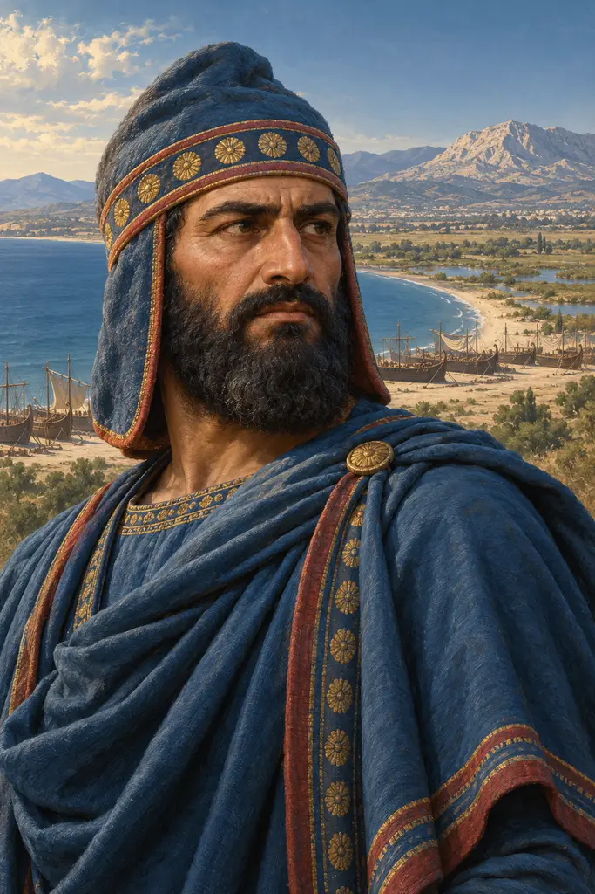
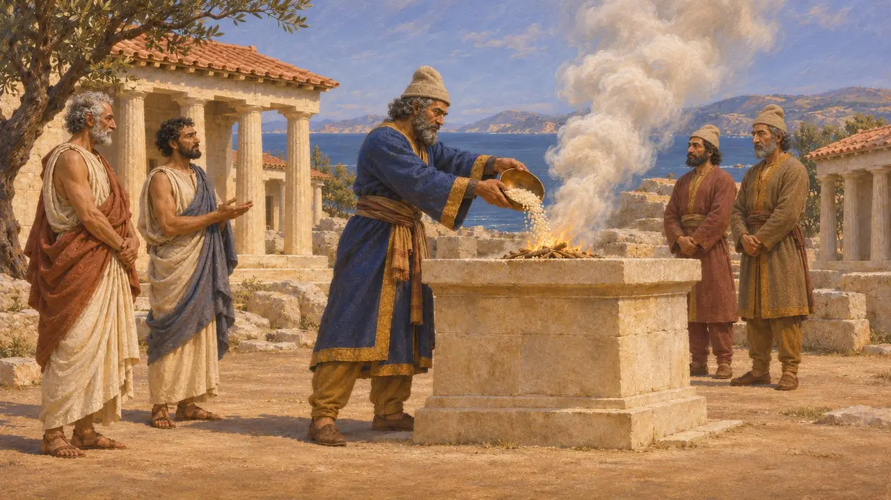
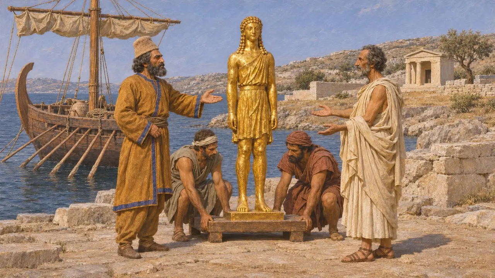
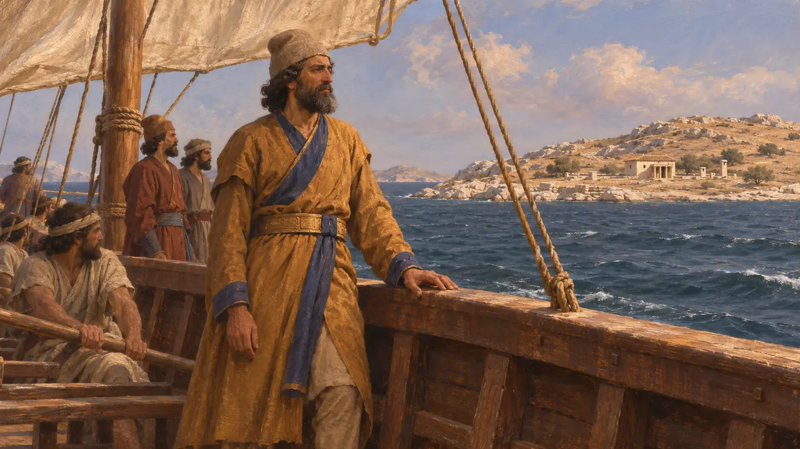

Dati il Medo
Generale medo di Dario I, comandante della spedizione del 490 a.C.
Nel gioco: Livello 8: La baia di Maratona
Dati era un medo che comandò la spedizione marittima inviata da Dario contro Eretria e Atene nel 490 a.C., condividendo il comando con Artaferne il giovane. Conquistò Nasso ed Eretria e trattò Delo con rispetto, ma il suo esercito fu sconfitto a Maratona. Fu uno dei diversi Medi che ricoprirono alti comandi sotto i re persiani, e gli autori greci lo ricordarono come il volto della prima invasione.
Nel gioco: La Cronaca indica Dati come il comandante medo del 490 a.C. che risparmiò Delo, prese Eretria e fu sconfitto a Maratona, in accordo con Erodoto. Tralascia però che egli condivise il comando con Artaferne il giovane.
Un Datiya nelle tavolette di Persepoli
Nelle fontiUna tavoletta delle Fortificazioni di Persepoli, databile intorno al 494 a.C., registra razioni di viaggio per un uomo chiamato Datiya, che portava un documento sigillato del Re e si recava dal Re. David Lewis sostenne che si trattasse di Dati e collegò il suo viaggio agli anni della rivolta ionia. Se l'identificazione è corretta, è l'unica traccia di lui nei documenti persiani e mostra un ufficiale di fiducia che viaggiava con il sistema reale delle razioni alcuni anni prima di Maratona.
D. Lewis, Datis the Mede, Journal of Hellenic Studies 100, 1980

Nasso, Delo ed Eretria
Racconto anticoErodoto racconta che Dario affidò il comando a Dati, un Medo, e a suo nipote Artaferne figlio di Artaferne, al posto di Mardonio. La flotta salpò dalla Cilicia attraverso le isole e diede alle fiamme Nasso. A Delo Dati rassicurò gli isolani e bruciò una grande offerta d'incenso sull'altare di Apollo. Eretria resistette sei giorni, finché due cittadini la tradirono; i suoi templi furono incendiati e i suoi abitanti ridotti in prigionia.
Herodotus 6.94-101

Maratona e il ritorno
Racconto anticoGuidato dal tiranno ateniese in esilio Ippia, l'esercito sbarcò a Maratona, dove Ateniesi e Plateesi lo sconfissero; Erodoto riporta 6.400 caduti persiani contro 192 Ateniesi. Durante il viaggio di ritorno, Dati trovò su una nave fenicia una statua dorata di Apollo e la lasciò a Delo perché fosse restituita a Delio. Condusse i prigionieri eretriesi da Dario, che li stanziò ad Ardericca, nella Cissia, ed Erodoto in seguito nomina due figli di Dati tra i comandanti della cavalleria di Serse.
Herodotus 6.102-119; Herodotus 7.88

Dati morì a Maratona?
ContesoCtesia, nel compendio redatto da Fozio, afferma che Dati fu ucciso a Maratona e che gli Ateniesi si rifiutarono di restituirne il corpo. Erodoto lo vuole vivo dopo la battaglia, mentre torna in patria passando per Micono e Delo e consegna gli Eretriesi a Dario. Qui la maggior parte degli storici preferisce Erodoto, poiché Ctesia è spesso inattendibile su questo periodo, ma la questione non può essere risolta del tutto.
Ctesias, Persica, in Photius, Bibliotheca 72; Herodotus 6.118-119
L'assedio di Lindo
Leggenda posterioreLa Cronaca di Lindo, un'iscrizione eretta a Rodi nel 99, narra come Dati assediasse Lindo finché la città non rimase senz'acqua. Atena apparve in sogno e promise la pioggia. Quando la pioggia cadde, Dati concluse la pace e dedicò alla dea la propria veste, il proprio torques e altri ornamenti. Il racconto fu messo per iscritto quattro secoli più tardi per glorificare il tempio, ed Erodoto non ne fa menzione.
Lindian Chronicle; C. Higbie, The Lindian Chronicle and the Greek Creation of Their Past, 2003
Fonti
- Herodotus 6.94-119
- Herodotus 7.88
- D. Lewis, Datis the Mede, Journal of Hellenic Studies 100, 1980
- Ctesias, Persica, in Photius, Bibliotheca 72
- C. Higbie, The Lindian Chronicle and the Greek Creation of Their Past, 2003
- P. Briant, From Cyrus to Alexander, 2002